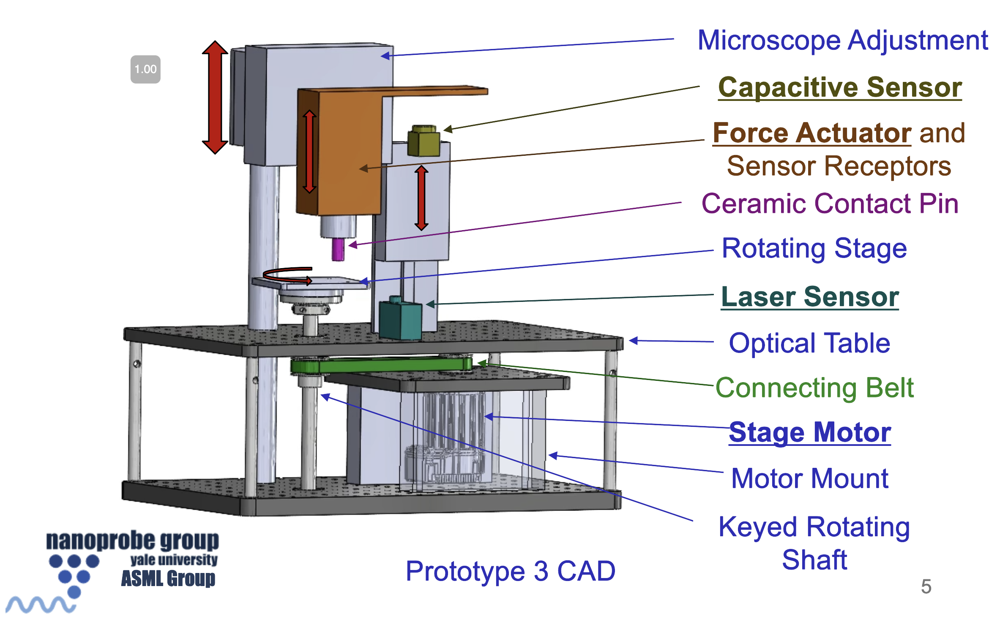
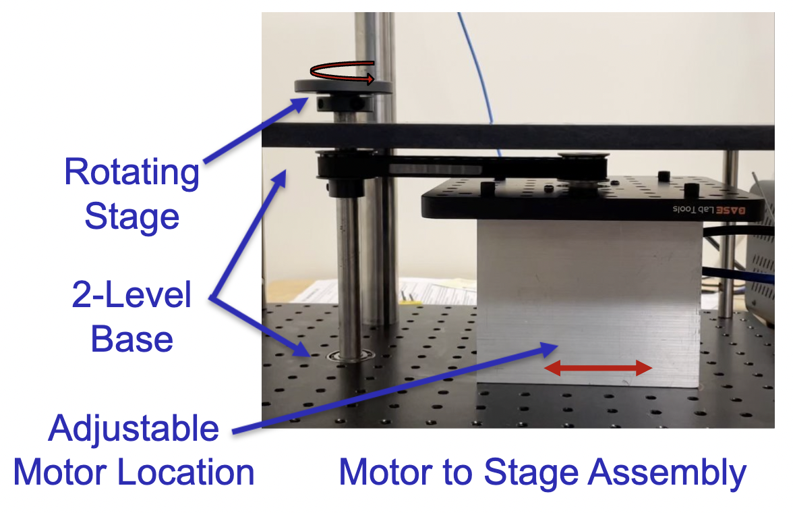
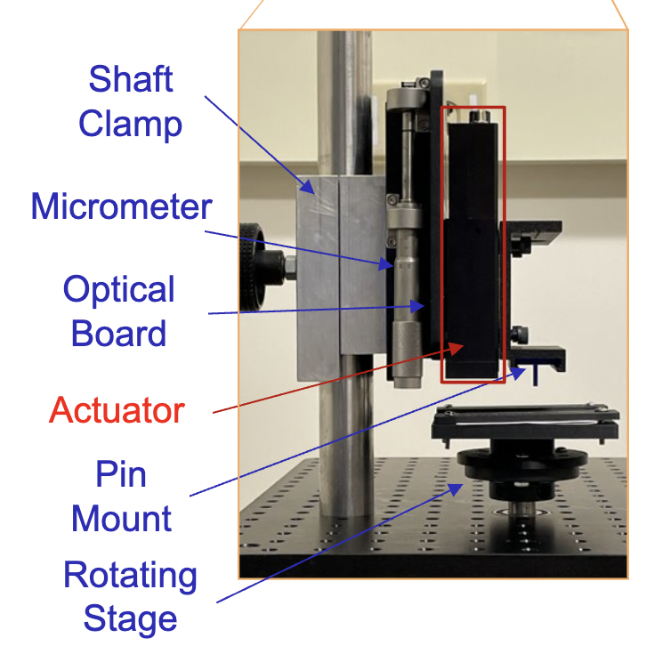
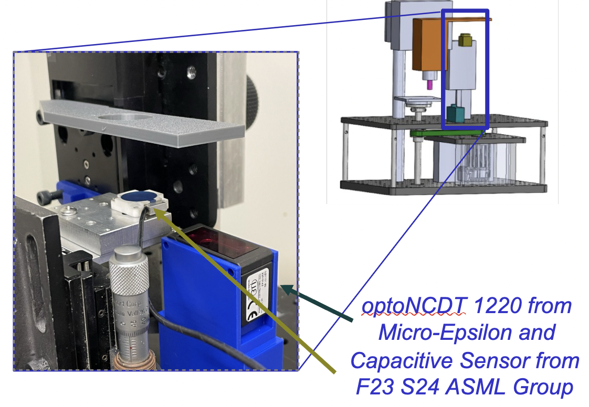
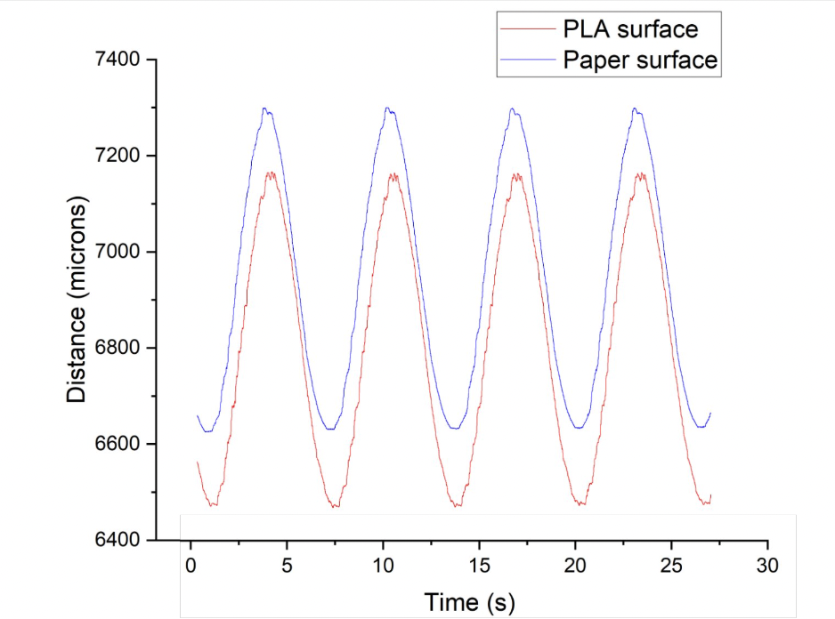

ASML Tribometer
For my senior Capstone design project, my team and I have been working with industry client ASML to create a tribimoter (wear tester) to measure and characterize wear between two flat surfaces at the nanoscale. ASML is a company that manufactures high-precision photolithography systems, used in manufacturing semiconductors. When their machines wear down due to the friction of moving chips, they need downtime to be repaired. We were tasked with building a tribometer that can characterize this wear as to better predict the life cycle of these moving parts, and schedule preventative maintence instead of waiting for the machines to break (costly!).

Concept
Our tribometer consists of three main systems. The first is a vibration-isolated DC motor that drives our rotating stage via a timing belt and a shaft constrained by bearings. The samples are fixed to the top of the rotating stage, and the motor allows us to spin this sample at various speeds and accelerations.

The second system is a force controlled linear actuator mounted to a linear stage, which sits on our main steel shaft. The linear stage allows us to move the linear actuator up and down via a micrometer to rest at the perfect height above the sample. The actuator allows us to apply specific forces to our sample through a flat ceramic pin. This pin is offset from the center of the rotating stage, creating a circular wear track.

The final system is our sensing system. The main measurements we are taking are through a capacitive sensor, that has a 500 micron range and a 40 nanometer resolution. We also are using a laser sensor as a course distance measurement, to allow us to set up our system so that the measurements are to be taken right in the middle of the capacitive sensor's operating range.

We are running all of these systems simultaneously through LabVIEW. See above for a video of our working prototype, and below for the data collected! Going forward, we are working on increasing the precision of the system, reducing the noise, and start characterizing DLC (diamond-like carbon) silicon wafers, with and without third body particles.
